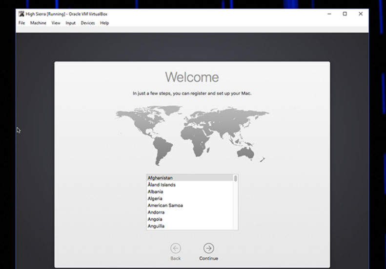

O Mac OS é o sistema operacional dos computadores da linha Macintosh, da Apple. O seu surgimento ocorreu em 1984, junto ao lançamento do primeiro Macintosh. Esse computador tinha 128 KB de RAM e processadores da família 68000 da Motorola. O sistema operacional do Macintosh era chamado apenas de System. A primeira versão para desktop, o Mac OS X 10.0, foi lançada em março de 2001, com sua primeira atualização, a 10.1, chegando ainda naquele ano. O Mac OS X 10.0 ajudou a Apple a se livrar do legado da década de 80, popularizou uma nova linguagem visual e revolucionou o mercado de dispositivos móveis, entre outros feitos.
Veja como instalar o MacOS passo a passo
Se você deseja testar um site ocasionalmente no Safari ou experimentar um pouco de software no ambiente Mac, ter acesso à versão mais recente do macOS em uma máquina virtual é útil. Infelizmente, você não deve fazer isso – portanto, fazer com que o macOS seja executado no VirtualBox é, para dizer o mínimo, complicado.
Não é impossível, entretanto. Algumas pessoas nos fóruns da InsanelyMac descobriram um processo que funciona. A única coisa que não funciona é o som, que por algum motivo é altamente distorcido ou inexistente. Fora isso, porém, este é o macOS High Sierra, funcionando perfeitamente no VirtualBox.
Para tornar as coisas um pouco mais fáceis para as pessoas, combinamos métodos de alguns tópicos de fórum diferentes em um único tutorial passo a passo, completo com capturas de tela. Vamos mergulhar.
NOTA: Para fazer isso funcionar, você precisará de acesso a um Mac real para fazer o download do High Sierra. Você poderia, supomos, obter um ISO da High Sierra por outros meios, mas não o recomendamos. Pegue emprestado o Mac de um amigo por uma hora se você não tiver um, e você deve ficar bem – tudo além da etapa um deste tutorial pode ser feito em seu PC com Windows.
Se você estiver em um Mac e quiser uma máquina virtual macOS para uso nesse Mac, recomendamos verificar o Parallels Desktop Lite , porque ele pode criar máquinas virtuais macOS gratuitamente e é muito mais fácil de trabalhar.
Pronto para começar? Vamos começar!
Para começar, precisaremos criar um arquivo ISO do instalador do macOS High Sierra, para que possamos carregá-lo no VirtualBox em nossa máquina Windows. Pegue seu Mac emprestado, vá até a Mac App Store, procure Sierra e clique em “Download”.
Quando o processo estiver concluído, o instalador será iniciado – tudo bem, basta fechá-lo com Command + Q. Não queremos atualizar o Mac do seu amigo; precisamos apenas dos arquivos baixados.
Para converter esses arquivos em ISO, precisaremos usar o Terminal, que você pode encontrar em Aplicativos> Utilitários.
Primeiro, execute o seguinte comando para criar uma imagem de disco em branco:
hdiutil create -o /tmp/HighSierra.cdr -size 7316m -layout SPUD -fs HFS + J
Em seguida, monte sua imagem em branco:
hdiutil attach /tmp/HighSierra.cdr.dmg -noverify -nobrowse -mountpoint / Volumes / install_build
Agora você irá restaurar BaseSystem.dmg do instalador para a imagem recém-montada:
asr restore -source / Applications / Install \ macOS \ High \ Sierra.app/Contents/SharedSupport/BaseSystem.dmg -target / Volumes / install_build -noprompt -noverify -erase
Observe que, depois de fazer isso, o nome do nosso ponto de montagem de destino mudou para “OS X Base System / System.” Você está quase pronto! Desmonte a imagem:
hdiutil detach / Volumes / OS \ X \ Base \ System
hdiutil convert /tmp/HighSierra.cdr.dmg -format UDTO -o /tmp/HighSierra.iso
Mova o ISO para a área de trabalho:
mv /tmp/HighSierra.iso.cdr ~ / Desktop / HighSierra.iso
E você tem um arquivo ISO inicializável da High Sierra!
Copie-o para sua máquina Windows usando uma grande unidade flash, um disco rígido externo ou pela rede local
Em seguida, vá para a sua máquina Windows e instale o VirtualBox, se ainda não o fez, certificando-se de ter a versão mais recente (sério, versões mais antigas podem não funcionar).
Abra-o e clique no botão “Novo”. Nomeie sua máquina virtual como “High Sierra” e escolha “Mac OS X” para o sistema operacional e “Mac OS X (64 bits)” para a versão (no momento em que este documento foi escrito, “macOS High Sierra” não é oferecido, mas isso é bom.)
Continue com o processo. Para memória, recomendamos que você use pelo menos 4096 MB, embora você possa optar por mais se tiver RAM suficiente de sobra em sua máquina Windows
Em seguida, você será questionado sobre seu disco rígido. Escolha “Criar um disco rígido virtual agora” e clique em Criar.
Escolha VDI para o tipo de disco rígido e clique em Avançar. Você será perguntado se deseja uma unidade de tamanho dinâmico ou consertada. Recomendamos Fixed Size, pois é um pouco mais rápido, embora ocupe um pouco mais de espaço no disco rígido da sua máquina Windows.
Clique em Avançar. Você será questionado sobre o tamanho do disco que deseja; Recomendamos pelo menos 25 GB, que é grande o suficiente para o sistema operacional e alguns aplicativos. Dependendo da sua situação de armazenamento, você poderia oferecer mais, mas não achamos que possa usar muito menos do que isso.
Clique nos prompts e você criou uma entrada para sua máquina virtual! Agora é hora de fazer uma pequena configuração.
Você deve ver sua máquina virtual na janela principal do VirtualBox.
Selecione-o e clique no grande botão amarelo “Configurações”. Primeiro, vá para “Sistema” na barra lateral esquerda. Na guia Placa-mãe, certifique-se de que a opção “Disquete” esteja desmarcada.
Em seguida, vá para a guia “Processador” e certifique-se de ter pelo menos duas CPUs alocadas para a máquina virtual.
Em seguida, clique em “Exibir” na barra lateral esquerda e certifique-se de que a memória de vídeo esteja configurada para pelo menos 128 MB.
Em seguida, clique em “Armazenamento” na barra lateral esquerda e, em seguida, clique na unidade de CD “Esvaziar”. Clique no ícone do CD no canto superior direito e navegue até o arquivo ISO High Sierra criado anteriormente.
Clique em “OK” para finalizar todas as alterações feitas e feche o VirtualBox. Não, sério: feche o VirtualBox agora ou as próximas etapas não funcionarão.
Fizemos alguns ajustes, mas precisamos fazer mais alguns para convencer o sistema operacional de que está sendo executado em um Mac real. Infelizmente, não há opções para isso na interface do VirtualBox, então você precisará abrir o prompt de comando.
Abra o Menu Iniciar, pesquise “Prompt de Comando”, clique com o botão direito e selecione “Executar como administrador”.
Você precisa executar vários comandos, em ordem. Cole os seguintes comandos, pressionando Enter após cada um e aguardando a conclusão:
cd "C: Program FilesOracleVirtualBox"
VBoxManage.exe modifyvm "High Sierra" --cpuidset 00000001 000306a9 04100800 7fbae3ff bfebfbff
VBoxManage setextradata "High Sierra" "VBoxInternal / Devices / efi / 0 / Config / DmiSystemProduct" "MacBookPro11,3"
VBoxManage setextradata "High Sierra" "VBoxInternal / Devices / efi / 0 / Config / DmiSystemVersion" "1.0"
VBoxManage setextradata "High Sierra" "VBoxInternal / Devices / efi / 0 / Config / DmiBoardProduct" "Mac-2BD1B31983FE1663"
VBoxManage setextradata "High Sierra" "VBoxInternal / Devices / smc / 0 / Config / DeviceKey" "ourhardworkbythesewordsguardedpleasedontsteal (c) AppleComputerInc"
VBoxManage setextradata "High Sierra" "VBoxInternal / Devices / smc / 0 / Config / GetKeyFromRealSMC" 1
É isso aí! Se tudo funcionar, você não verá nenhum feedback; os comandos simplesmente serão executados. Se o comando não funcionar, certifique-se de que sua máquina virtual tenha o nome exato “High Sierra”; se não for, edite os comandos acima, colocando o nome da sua máquina entre aspas. Vá em frente e feche o Prompt de Comando. Estamos voltando para o VirtualBox agora.
Abra novamente o VirtualBox, clique em sua máquina Sierra e clique em “Iniciar”. Sua máquina começará a inicializar. Você verá muitas informações supérfluas conforme isso acontecer – e quero dizer muitas – mas não se preocupe com isso. É normal, até mesmo algumas coisas que parecem erros.
Você só deve se preocupar se um erro específico travar por cinco minutos ou mais. Apenas vá embora e deixe correr um pouco. Se você fez tudo certo, ele inicializa. Eventualmente, você verá o instalador solicitando que você escolha um idioma:
Escolha “Inglês” ou qualquer idioma de sua preferência e clique em “Avançar”. Antes de fazer qualquer outra coisa, no entanto, clique em “Utilitário de Disco” e depois em “Continuar”.
Você não verá a unidade: não entre em pânico, o High Sierra oculta unidades em branco por padrão . Na barra de menu, clique em “Exibir” seguido de “Mostrar todos os dispositivos”.
Agora você deve ver sua unidade virtual vazia na barra lateral. Clique nele e na opção “Apagar”.
Nomeie a unidade como “Macintosh HD” e deixe as outras duas configurações como estão: “Mac OS Extended Journaled” e “GUID Partition Map”. Não crie uma partição AFS , porque ela não funcionará e você terá que reiniciar com um novo disco rígido virtual. Clique em “Apagar” e feche o Utilitário de Disco quando o processo for concluído. Você será levado de volta à janela principal.
Selecione “Reinstalar macOS” e clique em “Continuar”. Você será solicitado a concordar com os termos.
Concorde e você eventualmente será solicitado a escolher um disco rígido; selecione a partição que você acabou de fazer.
A instalação começará! Isso pode demorar um pouco, então seja paciente. Eventualmente, sua máquina virtual será reiniciada e o levará … de volta ao instalador. Não entre em pânico: isso é esperado.
Neste ponto, o instalador copiou os arquivos para o disco rígido virtual e espera inicializar a partir daí. Por alguma razão, isso não funciona na máquina virtual, e é por isso que você está vendo o instalador novamente. Desligue sua máquina virtual e abra suas configurações. Vá para Armazenamento, clique em “HighSierra.iso” no painel “Árvore de armazenamento”, clique no ícone do CD no canto superior direito e clique em “Remover disco da unidade virtual”. Isso desconectará completamente nossa ISO de instalação.

Agora inicie a máquina virtual e você verá esta linda tela.
Este é o EFI Internal Shell, e contanto que você veja “FS1” listado em amarelo, você pode usá-lo para iniciar o resto do instalador. Clique na máquina virtual e permita que ela capture o mouse e o teclado, depois digite fs1: e pressione Enter. Isso mudará os diretórios para FS1, onde o restante do instalador está localizado. Em seguida, vamos executar alguns comandos para alternar para o diretório de que precisamos: cd "dados de instalação do macOS" cd "Arquivos bloqueados" cd "Arquivos de inicialização" Agora podemos executar o próprio instalador com o seguinte comando: boot.efi
O instalador continuará de onde parou. Primeiro, você verá uma série de texto, como antes, mas, eventualmente, verá o instalador da GUI voltar. (Não se preocupe, você só precisa passar por esse processo uma vez.)
Estamos chegando lá, só precisamos de um pouco mais de paciência.
Eventualmente, a máquina virtual será reiniciada novamente, desta vez no macOS High Sierra. Se isso não acontecer, tente ejetar o ISO da Máquina Virtual. Quando o High Sierra inicializar, você precisará escolher seu país, configurar um usuário e o resto do processo de configuração inicial.
Eventualmente, você chegará à área de trabalho do Mac. Yay!
Agora você pode experimentar qualquer software Mac, embora algumas funções, como FaceTime e Mensagens, não funcionem porque a Apple não reconhecerá seu computador como um Mac real. Mas muitas das coisas básicas devem funcionar. Diverta-se!